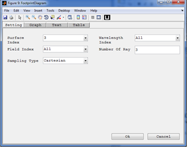
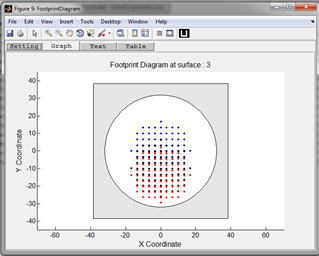

Footprint Diagram

Purpose:
Display the footprint diagram of the optical system at a given surface.
Setting:
Settings |
Description |
Remarks |
Surface Index |
The surface index used to view the footprint diagram. |
|
Field Index |
Index of the field value for the rays to be displayed in the layout. |
All fields can be used at the same time. |
Wavelength Index |
Index of the wavelength value for the rays to be displayed in the layout. |
All wavelengths can be used at the same time. |
Number of Rays |
The number of rays to be traced per each field point and each wavelength. |
Number less than 3 is not recommended. |
Sampling Type |
Select the sampling types to be used for pupil. |
Currently supported: Cartesian, Tangential, Sagital, and Random sampling. All others are treated as Cartesian. |
Created with the Personal Edition of HelpNDoc: Full-featured Documentation generator